<title>Today's Team Designs</title>
<meta name="claude:viewport-fit-sides" content="cover">
<link rel="preconnect" href="https://fonts.googleapis.com">
<link rel="preconnect" href="https://fonts.gstatic.com" crossorigin>
<link rel="stylesheet" href="https://fonts.googleapis.com/css2?family=Barlow:wght@400;500;600;700&family=Barlow+Condensed:wght@600;700&display=swap">
<style>
/* Today's team designs (7 Nov 2026): a preview only, never loaded by the book. Three designs for shifts, sections and
   breaks, drawn inside the running book and photographed. Every name, section, shift and time is made up.
   Layout: a dark band like the book's top bar, then one section per design with its phone screens in a row. */
:root {
  --bg: #FBFAF7; --paper: #FFFFFF; --ink: #1C1D1F; --muted: #55585E; --accent: #E2602A; --tag: #B83F15;
  --beige: #F2EFE8; --line: #E0DBCF; --bar: #2B2A27; --bar-text: #FBF8F1; --bar-accent: #F08A4B; --good: #237347; --good-tint: #EAF5EE; --shot-edge: #D9D4C8;
  --display: 'Barlow Condensed', 'Arial Narrow', sans-serif;
  --body: 'Barlow', system-ui, -apple-system, 'Segoe UI', sans-serif;
  --radius: 10px;
}
@media (prefers-color-scheme: dark) { :root:not([data-theme="light"]) {
  --bg: #1B1A18; --paper: #252421; --ink: #F2EEE6; --muted: #B9B3A8; --accent: #F08A4B; --tag: #F4A26E;
  --beige: #2F2D29; --line: #3A3833; --bar: #121110; --bar-text: #FBF8F1; --bar-accent: #F08A4B; --good: #7CC79A; --good-tint: #1F2E25; --shot-edge: #3A3833; color-scheme: dark } }
:root[data-theme="dark"] {
  --bg: #1B1A18; --paper: #252421; --ink: #F2EEE6; --muted: #B9B3A8; --accent: #F08A4B; --tag: #F4A26E;
  --beige: #2F2D29; --line: #3A3833; --bar: #121110; --bar-text: #FBF8F1; --bar-accent: #F08A4B; --good: #7CC79A; --good-tint: #1F2E25; --shot-edge: #3A3833; color-scheme: dark }
* { box-sizing: border-box; }
body { margin: 0; background: var(--bg); color: var(--ink); font: 400 16px/1.55 var(--body); }
.wrap { max-width: 1180px; margin: 0 auto; padding-left: max(16px, env(safe-area-inset-left, 0px)); padding-right: max(16px, env(safe-area-inset-right, 0px)); }
.band { background: var(--bar); color: var(--bar-text); }
.band .wrap { padding-block: 34px 30px; }
.kick { margin: 0 0 8px; font: 600 .75rem/1.3 var(--body); letter-spacing: .14em; text-transform: uppercase; color: var(--bar-accent); }
h1 { margin: 0; font: 700 clamp(2.4rem, 7vw, 4rem)/.95 var(--display); letter-spacing: -.01em; text-wrap: balance; }
.lede { max-width: 66ch; margin: 14px 0 0; color: #E9E4D8; }
.asks { display: grid; gap: 10px; margin: 18px 0 0; padding: 0; list-style: none; max-width: 78ch; }
.asks li { padding-left: 14px; border-left: 3px solid var(--bar-accent); color: #E9E4D8; font-size: .9375rem; }
.asks b { color: var(--bar-text); }
section.sec { padding-block: 34px 6px; }
h2 { margin: 0 0 6px; font: 700 clamp(1.8rem, 4vw, 2.4rem)/1.05 var(--display); text-wrap: balance; }
h3 { margin: 18px 0 6px; font: 700 1.25rem/1.2 var(--display); letter-spacing: .02em; }
.sub { margin: 0 0 16px; max-width: 70ch; color: var(--muted); }
.verdicts { display: grid; grid-template-columns: repeat(auto-fit, minmax(260px, 1fr)); gap: 14px; margin-top: 18px; }
.verdict { padding: 14px 16px; border-radius: var(--radius); background: var(--paper); border: 1px solid var(--line); min-width: 0; }
.verdict .k { display: block; font: 700 .75rem var(--body); letter-spacing: .12em; text-transform: uppercase; color: var(--tag); }
.verdict b { display: block; margin: 2px 0 4px; font: 700 1.6rem/1.1 var(--display); }
.verdict p { margin: 0; font-size: .9375rem; color: var(--muted); }
.rec { margin-top: 18px; padding: 18px 20px; border-radius: var(--radius); background: var(--paper); border-left: 5px solid var(--accent); }
.rec .k { display: block; font: 700 .75rem var(--body); letter-spacing: .12em; text-transform: uppercase; color: var(--tag); }
.rec h2 { margin-top: 4px; }
.rec ol, .rec ul { margin: 8px 0 0; padding-left: 1.2rem; display: grid; gap: 6px; max-width: 78ch; }
.core { display: grid; grid-template-columns: minmax(0, 1fr) minmax(0, 1fr); gap: 24px; align-items: start; }
.core ol { margin: 0; padding-left: 1.2rem; display: grid; gap: 8px; }
.design { border-top: 2px solid var(--ink); margin-top: 26px; padding-top: 18px; }
.dhead { display: flex; flex-wrap: wrap; align-items: baseline; gap: 4px 14px; }
.dletter { font: 700 2.8rem/1 var(--display); color: var(--accent); }
.dhead h2 { margin: 0; }
.dtag { font: 600 .8125rem var(--body); letter-spacing: .1em; text-transform: uppercase; color: var(--muted); }
.score { margin-left: auto; padding: 4px 12px; border-radius: 999px; background: var(--beige); font: 700 .9375rem var(--body); font-variant-numeric: tabular-nums; }
.score.top { background: var(--accent); color: #1C1D1F; }
.split { display: grid; grid-template-columns: minmax(0, 1fr) minmax(0, 1fr); gap: 20px; margin-top: 8px; }
.split p { margin: 0 0 8px; max-width: 62ch; }
.pc { display: grid; grid-template-columns: minmax(0, 1fr) minmax(0, 1fr); gap: 14px; margin: 14px 0 0; }
.pc div { padding: 12px 14px; border-radius: var(--radius); background: var(--paper); border: 1px solid var(--line); min-width: 0; }
.pc h4 { margin: 0 0 6px; font: 700 .8125rem var(--body); letter-spacing: .12em; text-transform: uppercase; }
.pc .pro h4 { color: var(--good); } .pc .con h4 { color: var(--tag); }
.pc ul { margin: 0; padding-left: 1.1rem; display: grid; gap: 4px; font-size: .9375rem; }
.shots { display: flex; gap: 16px; overflow-x: auto; padding: 16px 2px 12px; scroll-snap-type: x proximity; }
.shots figure { flex: 0 0 auto; margin: 0; width: 230px; scroll-snap-align: start; }
.shots figure.wide { width: min(640px, 86vw); }
.shots img { display: block; width: 100%; height: auto; border-radius: 12px; border: 1px solid var(--shot-edge); background: #FBFAF7; }
.shots figcaption { margin-top: 6px; font-size: .8125rem; line-height: 1.35; color: var(--muted); }
.shots figcaption b { color: var(--ink); }
.tablewrap { overflow-x: auto; margin-top: 14px; border: 1px solid var(--line); border-radius: var(--radius); background: var(--paper); }
table { width: 100%; min-width: 760px; border-collapse: collapse; font-size: .9375rem; }
th, td { padding: 10px 12px; text-align: left; vertical-align: top; border-top: 1px solid var(--line); }
thead th { border-top: 0; font: 700 .75rem var(--body); letter-spacing: .1em; text-transform: uppercase; color: var(--muted); background: var(--beige); }
tbody th { font-weight: 600; }
td { font-variant-numeric: tabular-nums; }
.qs { margin: 10px 0 0; padding-left: 1.2rem; display: grid; gap: 8px; max-width: 80ch; }
.foot { margin: 40px 0 0; padding-block: 18px 40px; border-top: 1px solid var(--line); color: var(--muted); font-size: .875rem; }
.note { color: var(--muted); font-size: .875rem; }
@media (max-width: 760px) { .core, .split, .pc { grid-template-columns: 1fr; } .score { margin-left: 0; } }
</style>

<header class="band"><div class="wrap">
  <p class="kick">Leichhardt Kitchen Book · Service council · 7 November 2026</p>
  <h1>Today's team: shifts, sections and breaks</h1>
  <p class="lede">Three designs for the head chef's request, drawn inside the running book with its own look, then photographed. Every name, section, shift and time on this page is made up. Nothing is built yet.</p>
  <ul class="asks">
    <li><b>Breaks.</b> In the morning the head chef or a sous chef picks who is working today and gives them set break times. Staff then see when they go on break and for how long, quietly.</li>
    <li><b>Sections.</b> While handing out breaks, the chef also sets the section each person is on.</li>
    <li><b>Shifts.</b> Sections can change by shift (lunch, dinner), and the head chef creates the kinds of shift in the admin panel, like a smoker shift, for people to be put on.</li>
  </ul>
</div></header>

<main class="wrap">
  <div class="verdicts">
    <div class="verdict"><span class="k">Round 1 · Should we build it?</span><b>Build smaller, 4 of 5</b><p>Worth it, without a pop-up that opens by itself, with few taps, and never "no break" when the book does not know.</p></div>
    <div class="verdict"><span class="k">Round 2 · Six reviewers ranked them</span><b>A 16 · B 14 · C 6</b><p>A first for 4 of 6. C last for all 6. Every reviewer asked for the same pieces of B.</p></div>
  </div>

  <div class="rec" id="recommendation">
    <span class="k">Recommendation</span>
    <h2>A, with three pieces of B</h2>
    <ol>
      <li><b>Chef: a tile and a quiet line, no pop-up.</b> Today's team in the chef hat, a To do line in the admin panel, and "Set today's team" under the count on the chef's own prep list until the day is saved.</li>
      <li><b>The chef's page with B's shortcuts:</b> "Same as last Saturday? Use it", then one shift at a time with "Spread them" for breaks. A normal morning is 7 taps.</li>
      <li><b>Staff: B's header line with A's words.</b> "Lunch: Grill · Break 14:30" under the count on the prep list, orange with "Changed 10:12 by Sam" when the chef moves it, and the full day under their name in the chef hat. No list line is lost.</li>
    </ol>
    <div class="shots">
      <figure>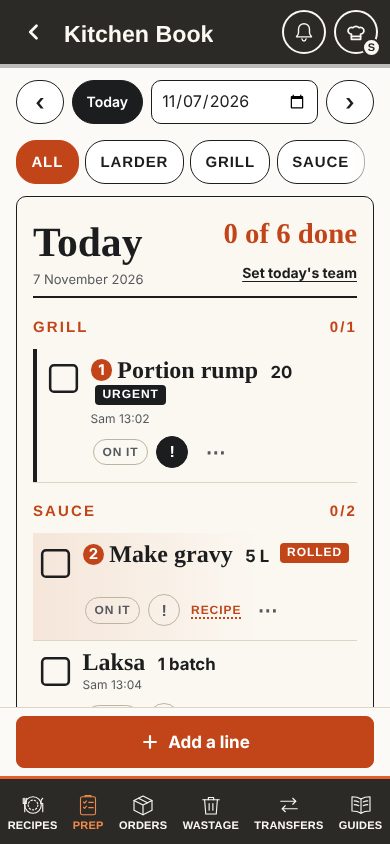<figcaption><b>Chef's prep list</b>: Set today's team, still 2 lines</figcaption></figure>
      <figure>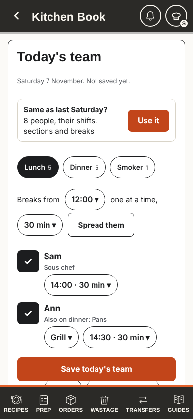<figcaption><b>Chef's page</b>: Use it, Spread them</figcaption></figure>
      <figure>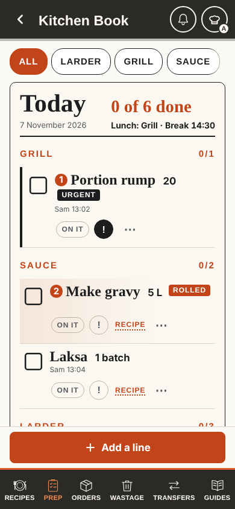<figcaption><b>Staff prep list</b>: still 3 lines</figcaption></figure>
      <figure>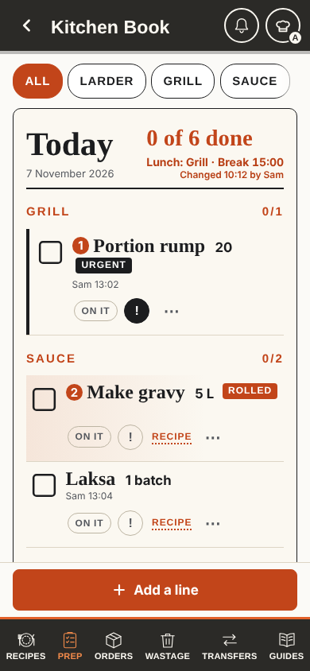<figcaption><b>Changed</b> by the chef, in orange</figcaption></figure>
      <figure>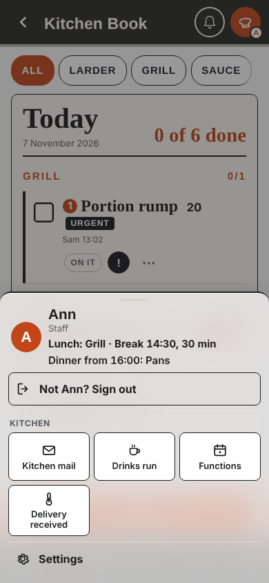<figcaption><b>Chef hat</b>: the whole day</figcaption></figure>
    </div>
    <p class="note">Left out: the sheet that opens by itself (B), the landing slip (B), the start sheet on extra days (A) and the board that removes the section pick (C). C's wide board could come later as a pass tablet view.</p>
  </div>

  <section class="sec" id="core">
    <h2>In every design</h2>
    <p class="sub">The council asked for a smaller version: no pop-up that opens by itself where it can be avoided, few taps, and nothing that hides a list line.</p>
    <div class="core">
      <ol>
        <li><b>Shifts, set up once</b> by the head chef in Admin, Kitchen, under Kitchen sections: Lunch, Dinner, Smoker or anything else, each with optional times.</li>
        <li><b>One record for the day</b>: who is on which shift, their section on each shift, and one or two breaks each. Saved by the head chef or a sous chef with one Save. Never yesterday's.</li>
        <li><b>Starts from last week</b>: the chef's screen opens on last Saturday's team, so a normal morning is "change what is different, then Save".</li>
        <li><b>Sections follow the shift</b>: Ann is on Grill at lunch and Pans at dinner by herself. Someone the chef set is not asked "Your section today". A cook moved mid-service keeps a one-tap change.</li>
        <li><b>Staff never see "no break"</b>: set, changed ("Changed 10:12 by Sam. Was 14:30.") or "Not set yet".</li>
        <li><b>Quiet and cheap</b>: no sound, no new pop-up for staff, nothing over a list. About 105 reads a day for 15 phones. No listener.</li>
      </ol>
      <div class="shots" style="padding-top:0"><figure class="wide">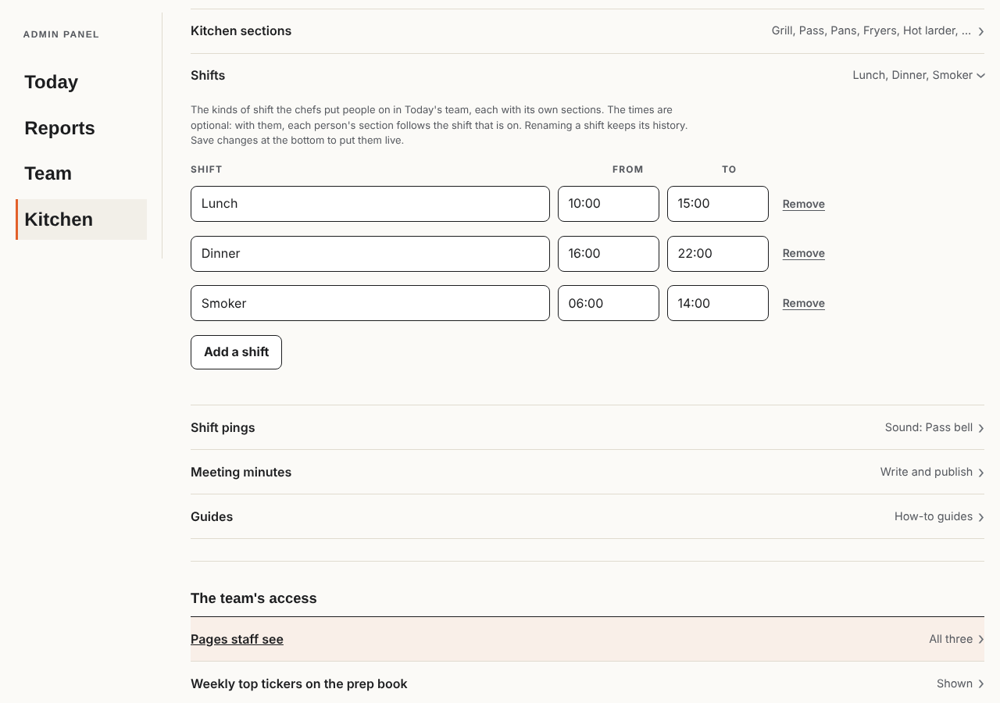<figcaption><b>Shifts row</b>, Admin, Kitchen (laptop)</figcaption></figure></div>
    </div>
  </section>

  <section class="sec" id="a">
    <div class="design">
      <div class="dhead"><span class="dletter">A</span><h2>Chef tile, quiet lines</h2><span class="dtag">Changes the least</span><span class="score top">16 points · first for 4 of 6</span></div>
      <div class="split">
        <p><b>Chef:</b> no pop-up. A <b>Today's team</b> tile in the chef hat's Chef group says "Not set yet" until the day is saved, and the admin's To do lists it. The page shows one shift at a time, one row per person with their section and break.</p>
        <p><b>Staff:</b> nothing new on the work pages. <b>Your day</b> sits at the top of the start of shift sheet and under their name in the chef hat.</p>
      </div>
      <div class="shots">
        <figure>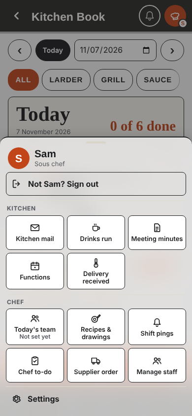<figcaption><b>Chef hat</b>: Today's team, Not set yet</figcaption></figure>
        <figure>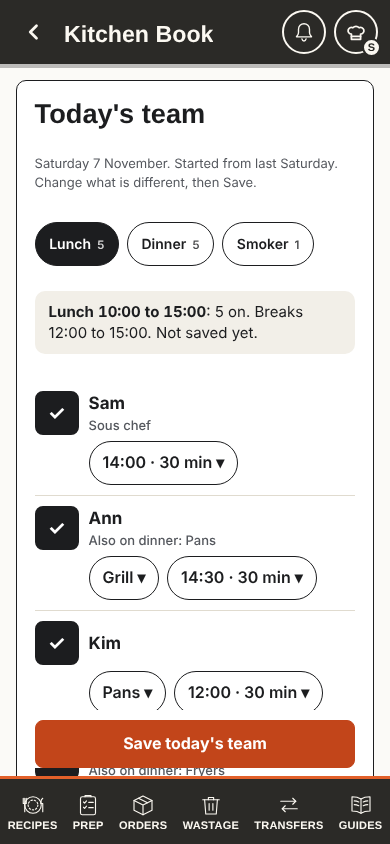<figcaption><b>Chef page</b>: one shift at a time</figcaption></figure>
        <figure>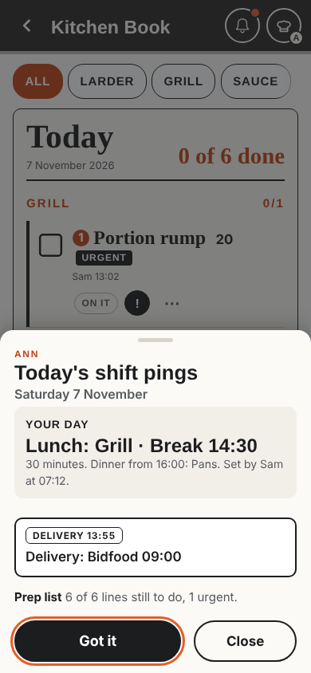<figcaption><b>Staff</b>: Your day in the start of shift sheet</figcaption></figure>
        <figure><figcaption><b>Staff</b>: under their name in the chef hat</figcaption></figure>
        <figure class="wide">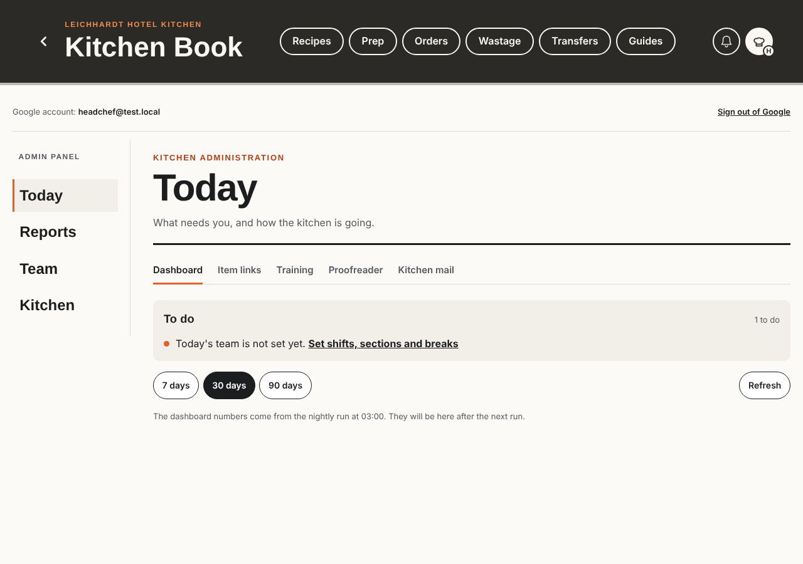<figcaption><b>Admin, Today</b>: a To do line until it is set</figcaption></figure>
      </div>
      <div class="pc"><div class="pro"><h4>For</h4><ul><li>No new pop-up for anyone.</li><li>Staff learn nothing new.</li><li>The smallest build.</li></ul></div>
        <div class="con"><h4>Against</h4><ul><li>The start sheet must come up on more days to show Your day.</li><li>After Got it, the break is one tap away.</li><li>A chef who forgets gets only "Not set yet" on a tile.</li></ul></div></div>
    </div>
  </section>

  <section class="sec" id="b">
    <div class="design">
      <div class="dhead"><span class="dletter">B</span><h2>Morning roll call</h2><span class="dtag">Rethinks the flow, as first asked</span><span class="score">14 points · first for 2 of 6</span></div>
      <div class="split">
        <p><b>Chef:</b> the first chef to sign in each day gets <b>Today's team</b> after the PIN. <b>Same as last Saturday? Use it</b> fills everything in one tap. Otherwise three short steps: who is on which shift, sections (pick a section, tap its people), breaks (Spread them, then fix any). Later leaves a tile in the chef hat.</p>
        <p><b>Staff:</b> a line that stays. A slip under the date on the landing page, orange when the chef changes it, and "Grill · Break 14:30" under the done count on the prep list, so no list line is lost.</p>
      </div>
      <div class="shots">
        <figure>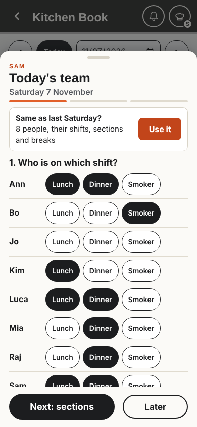<figcaption><b>1. Who is on which shift</b></figcaption></figure>
        <figure>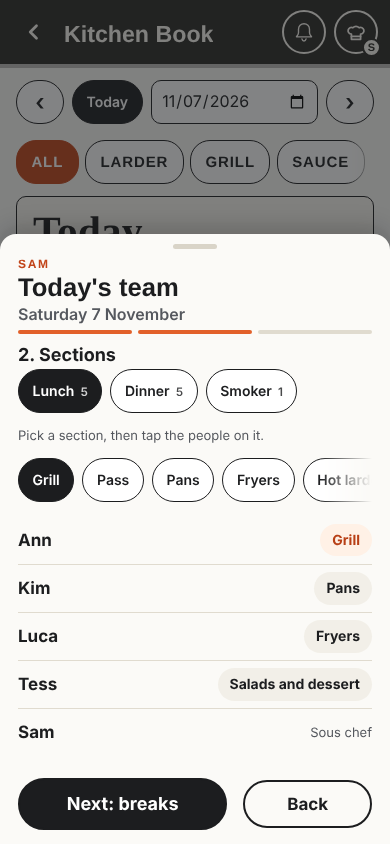<figcaption><b>2. Sections</b>, per shift</figcaption></figure>
        <figure>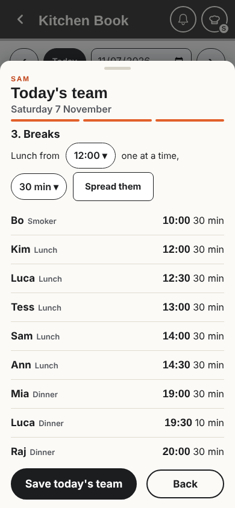<figcaption><b>3. Breaks</b>: Spread them</figcaption></figure>
        <figure>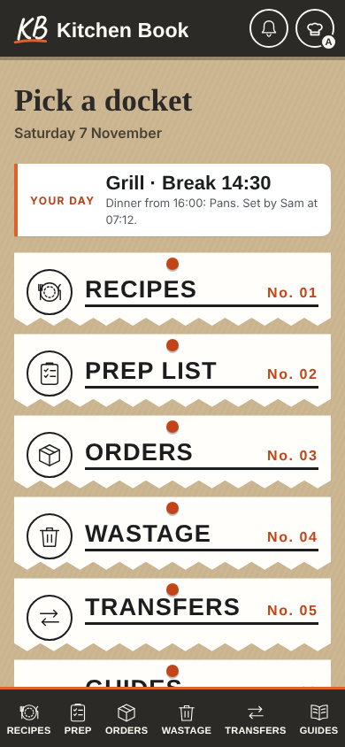<figcaption><b>Staff landing</b>: the line that stays</figcaption></figure>
        <figure>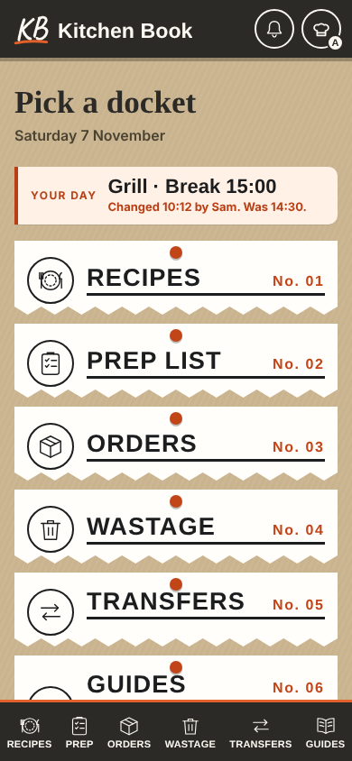<figcaption><b>Changed</b> by the chef</figcaption></figure>
        <figure>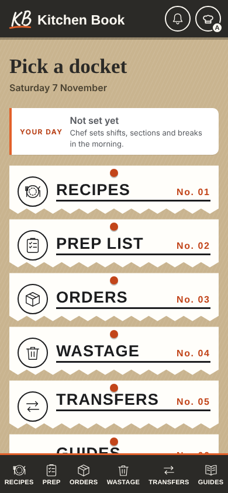<figcaption><b>Not set yet</b></figcaption></figure>
        <figure>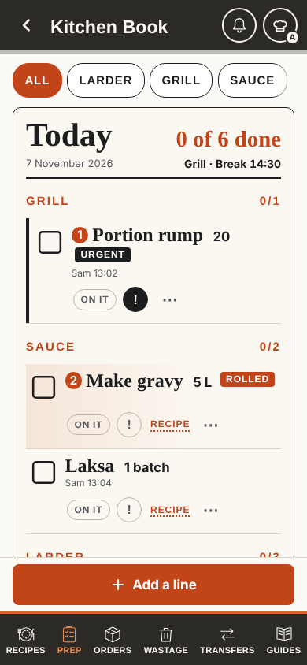<figcaption><b>Prep list</b>: in the header, 3 lines still show</figcaption></figure>
        <figure class="wide">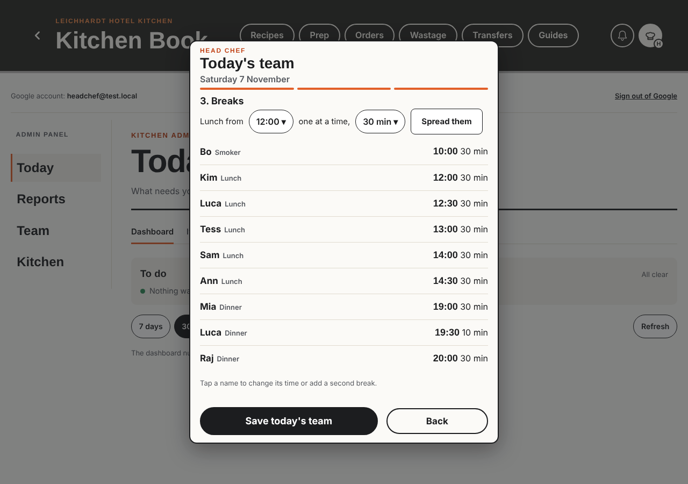<figcaption><b>Laptop</b>: the same sheet in the middle</figcaption></figure>
      </div>
      <div class="pc"><div class="pro"><h4>For</h4><ul><li>What the head chef asked for: the day is set before service.</li><li>Staff see their day with no tap, and a change shows in orange.</li><li>A fresh day is the fewest taps.</li></ul></div>
        <div class="con"><h4>Against</h4><ul><li>A pop-up for the chef, which 3 of 5 reviewers advised against.</li><li>The landing slip pushes Guides below the fold (6 dockets to 5).</li><li>The biggest build.</li></ul></div></div>
    </div>
  </section>

  <section class="sec" id="c">
    <div class="design">
      <div class="dhead"><span class="dletter">C</span><h2>One team board</h2><span class="dtag">Removes the most</span><span class="score">6 points · last for all 6</span></div>
      <div class="split">
        <p><b>Everyone:</b> one page, <b>Today's team</b>, from the chef hat. The shift on now first, each person under their section with their break, past breaks in grey, and <b>On break now</b> in a dark band. On a laptop or the pass tablet every shift shows side by side.</p>
        <p><b>Chef:</b> Change on each row opens that person's sheet. <b>Staff:</b> My section becomes <b>My day</b> in the chef hat, and "Your section today" goes for everyone.</p>
      </div>
      <div class="shots">
        <figure>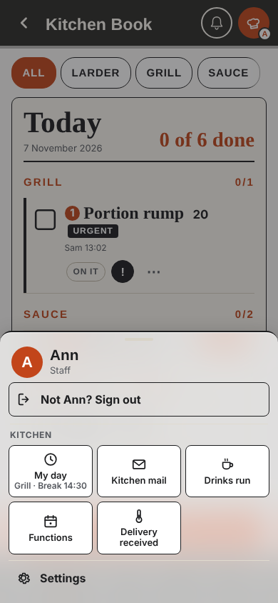<figcaption><b>Staff</b>: My day in the chef hat</figcaption></figure>
        <figure>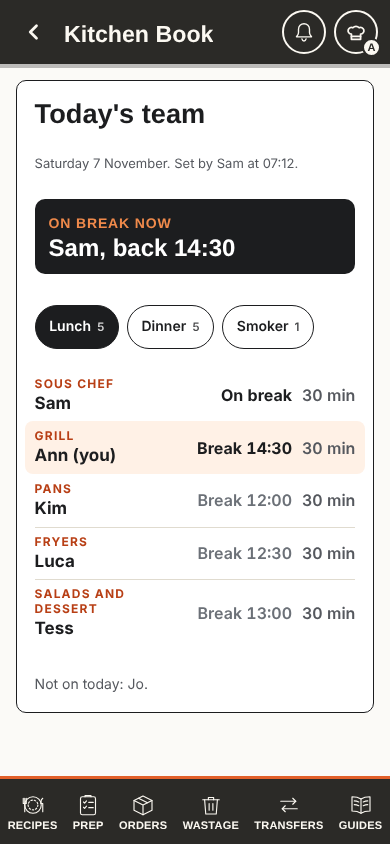<figcaption><b>The board</b>, staff view</figcaption></figure>
        <figure>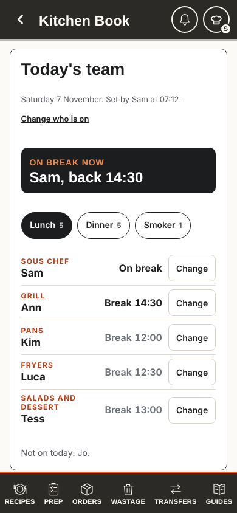<figcaption><b>The board</b>, chef view</figcaption></figure>
        <figure>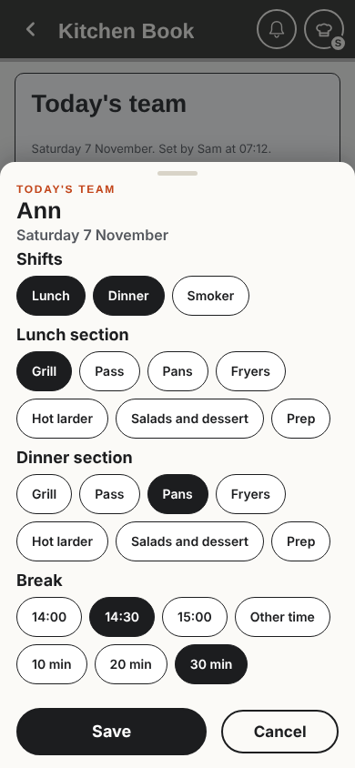<figcaption><b>One person</b>: shifts, sections, break</figcaption></figure>
        <figure class="wide">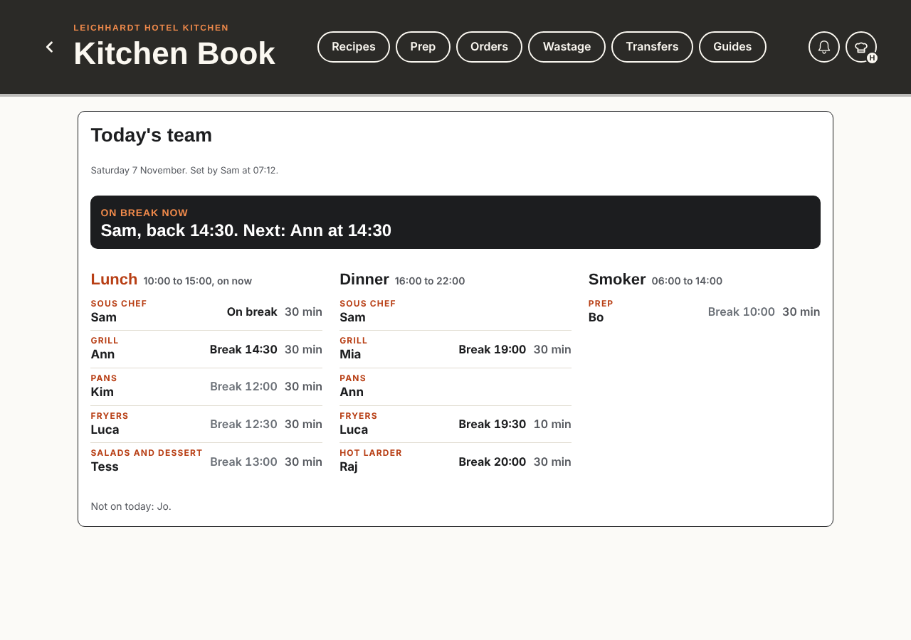<figcaption><b>Pass tablet or laptop</b>: every shift side by side</figcaption></figure>
      </div>
      <div class="pc"><div class="pro"><h4>For</h4><ul><li>One page for chefs and staff.</li><li>On break now helps the pass.</li><li>One question less at every staff sign-in.</li></ul></div>
        <div class="con"><h4>Against</h4><ul><li>Staff open a page to see the board.</li><li>A day the chef does not set leaves nobody with a section.</li><li>The most taps for a fresh day.</li></ul></div></div>
    </div>
  </section>

  <section class="sec" id="compare">
    <h2>Side by side</h2>
    <p class="sub">Taps counted by walking each mock-up, not on a built page. Normal day: the same team as last Saturday, one section and one break changed. Fresh day: nothing to start from, 8 people on 3 shifts, 9 breaks.</p>
    <div class="tablewrap"><table>
      <thead><tr><th scope="col"></th><th scope="col">Today</th><th scope="col">A. Chef tile</th><th scope="col">B. Roll call</th><th scope="col">C. Team board</th></tr></thead>
      <tbody>
        <tr><th scope="row">Chef taps, normal day</th><td>not possible</td><td>7</td><td>8 (opens by itself)</td><td>9</td></tr>
        <tr><th scope="row">Chef taps, fresh day</th><td>not possible</td><td>about 52</td><td>about 45</td><td>about 60</td></tr>
        <tr><th scope="row">Staff taps to see their day</th><td>nothing to see</td><td>0 in the start sheet, 1 later</td><td>0</td><td>1 (My day)</td></tr>
        <tr><th scope="row">Section question after the PIN</th><td>1 tap</td><td>0 when set</td><td>0 when set</td><td>never asked</td></tr>
        <tr><th scope="row">Add or tick a prep line</th><td>1</td><td>1</td><td>1</td><td>1</td></tr>
        <tr><th scope="row">Prep lines visible, 390 px (staff, chef)</th><td>3, 2</td><td>3, 2</td><td>3, 2</td><td>3, 2</td></tr>
        <tr><th scope="row">Landing dockets visible, 390 px</th><td>6</td><td>6</td><td>5</td><td>6</td></tr>
        <tr><th scope="row">New pop-up</th><td></td><td>none</td><td>chef's morning sheet</td><td>none</td></tr>
        <tr><th scope="row">Build size (pull requests)</th><td></td><td>3</td><td>4</td><td>3, plus the section pick reworked</td></tr>
        <tr><th scope="row">Relearning</th><td></td><td>small</td><td>medium</td><td>large</td></tr>
        <tr><th scope="row">Risk</th><td></td><td>low</td><td>medium</td><td>medium to high</td></tr>
      </tbody>
    </table></div>
  </section>

  <section class="sec" id="questions">
    <h2>Your call</h2>
    <p class="sub">The council advises; you decide. These five answers shape the build.</p>
    <ol class="qs">
      <li><b>The morning pop-up.</b> You asked for the book to ask the chef at sign-in. The council advises the quiet "Set today's team" line and a tile instead. Do you want the sheet that opens by itself anyway (B's roll call)?</li>
      <li><b>Between and overlapping shifts.</b> With Lunch to 15:00 and Dinner from 16:00, which section counts from 15:00 to 16:00? And for someone on Smoker and Lunch at once? Suggested: in a gap, the next of their shifts; when two overlap, the one that started last.</li>
      <li><b>The smoker shift.</b> A shift with its own hours, like an early start (as drawn), or a job on top of a lunch section?</li>
      <li><b>A cook moved during service.</b> May cooks change their own section with one tap (the chefs see it), or only the chefs?</li>
      <li><b>Breaks.</b> Which lengths to offer (drawn: 10, 20, 30 minutes) and up to how many a person (drawn: two)? Should staff see the whole team's breaks, or only their own?</li>
    </ol>
  </section>

  <section class="sec" id="today">
    <h2>The book today</h2>
    <p class="sub">For comparison: what staff and a sous chef see now on a phone.</p>
    <div class="shots">
      <figure>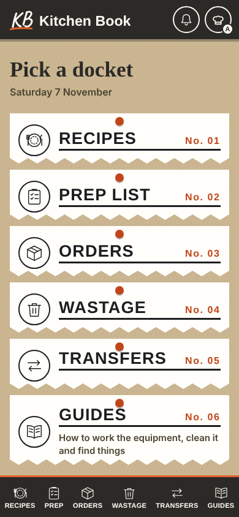<figcaption><b>Landing</b>: six dockets</figcaption></figure>
      <figure>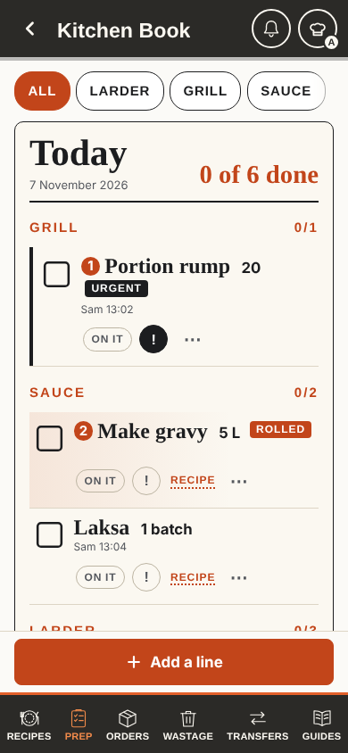<figcaption><b>Prep list</b>: 3 lines visible</figcaption></figure>
      <figure>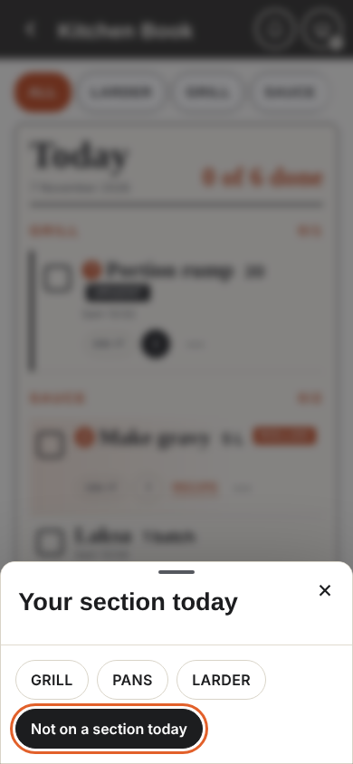<figcaption><b>Your section today</b>, after the PIN</figcaption></figure>
      <figure>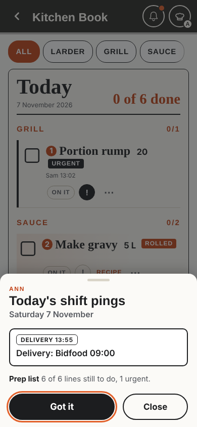<figcaption><b>Start of shift sheet</b></figcaption></figure>
      <figure>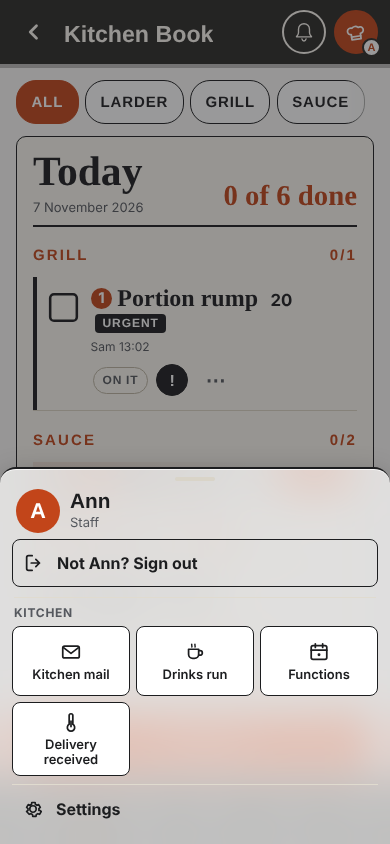<figcaption><b>Chef hat</b>, staff</figcaption></figure>
      <figure>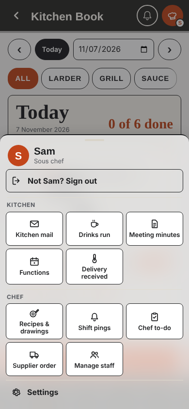<figcaption><b>Chef hat</b>, sous chef</figcaption></figure>
    </div>
  </section>

  <p class="foot">The council advises; the head chef decides. Reviewers are role-based analysis, not research with real staff. Brief: docs/todays-team-options/brief.md in the Kitchen Book repository.</p>
</main>
